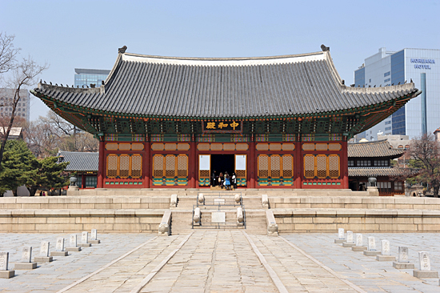

일시:2020.12.12 토요일
궁궐길라잡이의 문화유산 보존과 문화재 보호를 위한 활동이 꾸준히 이어지고 있습니다.
해설로 문화재를 복원하고 가치를 올바르게 전달하려고 노력해온 단체의 활동을 자축하는 기념식에 모시고 싶습니다.
참석하여 격려해 주시고 자리를 빛내 주시기 바랍니다. '2020 궁궐길라잡이의 밤'에 오신 걸 환영합니다. 
매년 12월 '궁궐길라잡이의 밤'을 통해 길라잡이들의 만남의 시간을 갖지만 올해는 감회가
더욱 특별합니다.
지난해엔 궁궐길라잡이 20주년 행사가 성황리에 있었으며 올해는 21주년
되는 해이기도 합니다.
오늘날은
필요한 지식을 검색과 SNS로 빠르게 얻을 수 있습니다.
전문가가 대신 일을 처리해줍니다.
기계를 이용해서 자동화를 할 수 있습니다.
이런 시대일수록
교양의 힘이 폭발적으로 늘어납니다.
이런 놀라운 시대에
코딩의 교양을 함께 나눌 수 있어서 영광이었습니다.
지금은 작게 보일지도 모르지만,
우리가 심은 이 교양이
어떤 열매를 맺게 될지 함께 지켜보시죠.
길라잡이들의 든든한 지지를 버팀목 삼아 길라잡이들께서는 새해에도 더 나은 세상을 위해
기여하는 희망의 메신저가 되어 주시기를 기원합니다.
2021년 새해에도 회원님과 가정에 기쁨과 희망이 가득하기를 기원합니다.
2020.12.12
궁궐길라잡이 22기 전 돈응